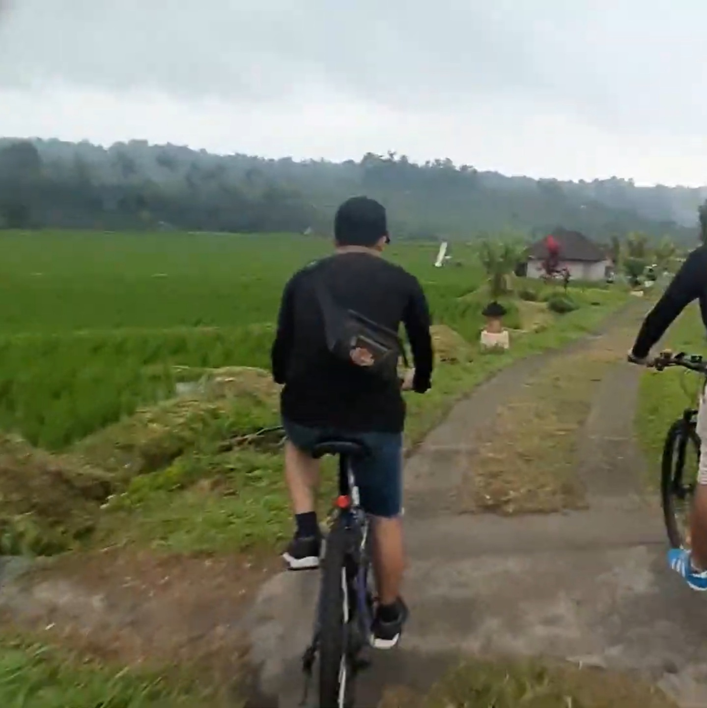
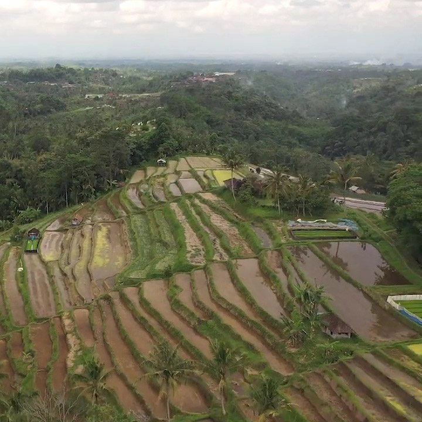
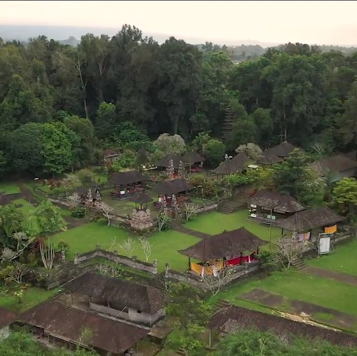
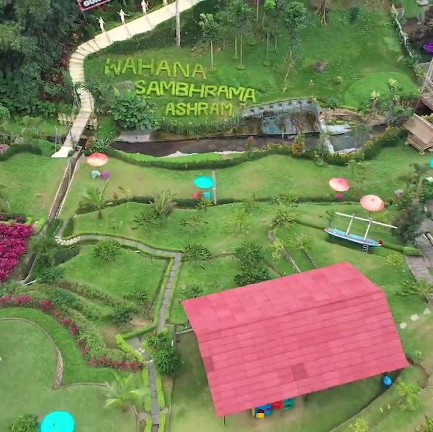
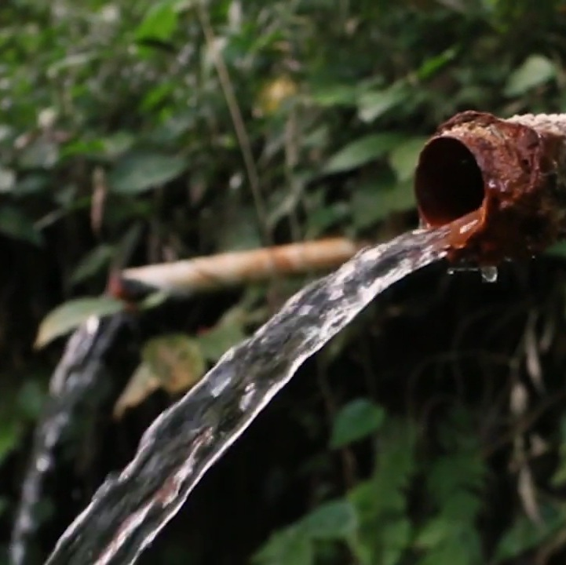

Trekking&Cycling

Jalur trekking dan bersepeda dengan pemandangan sawah yang alami. Tidak perlu khawatir jika Anda tidak
terbiasa berjalan di persawahan. Jalur utama telah diperlebar dan dipasang paving sehingga akan memudahkan
Anda saat berjalan ataupun bersepeda
Waterfall

Air terjun alami yang lokasinya dekat persawahan. Airnya berasal dari Gunung Batukaru, gunung tertinggi nomor
2 di Bali yang masih terjaga alamnya
Traditional Rice Terrace

Terasering sawah yang dengan nuansa dan ciri khas alam Bali. Berbatasan dengan Jatiluwih yang merupakan
warisan dunia (UNESCO). Tips: ingat bawa baju ganti, jika Anda datang pada saat yang tepat, Anda bisa ikut
membajak sawah bersama petani
Crystal Water

Setelah lelah berjalan-jalan ataupun bersepada, Anda bisa berendam di aliran air subak yang bersih dan
terjaga. Tips: membawa floating dan datang bersama teman-teman sangat dianjurkan. Dengan catatan tetap jaga
kebersihan.
Pura Besikalung

Pura Luhur Besi Kalung memiliki keunikan tersendiri di bandingkan pura lain di Bali. Terutama, karena tidak
hanya memiliki desain arsitektur unik, tapi juga menyuguhkan pemandangan alam yang memukau. Alasannnya, karena
pura ini terletak di daerah pegunungan di lereng gunung bagian selatan Gunung Batukaru
Wahana&Ashram

Dengan pemandangan dan suasana alami dan asri cocok untuk liburan keluarga dengan harga yang terjangkau,
tersedia kolam renang dewasa dan anak, selfie spots, dan wahana swing, skybike dan flying fox di tempat ini
juga dapat dijadikan lokasi gathering dan outbound yang asyik dan menyenangkan.
Hot Spring

Pancuran air hangat alami yang terletak di tengah perkebunan dan di pinggir sungai. Terdapat 3 pancuran
dengan kandungan belerang yang konon berkhasiat untuk mengobati berbagai penyakit kulit